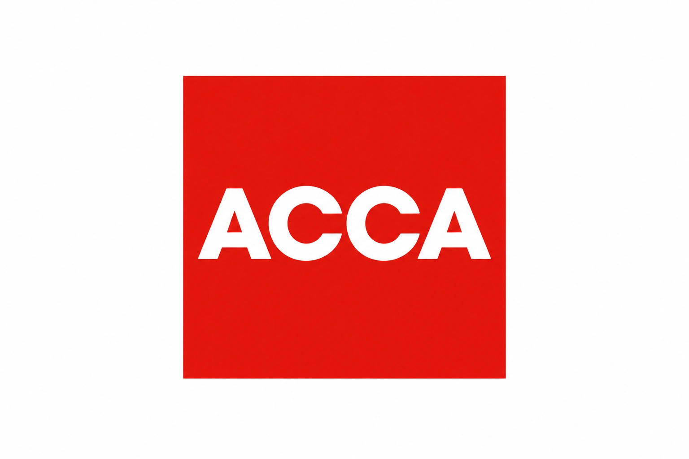

حضوري في الرياض
- المدة: 4 أسابيع
- في مقر معهد مسارتك بالرياض
لا توجد دفعة حضورية مفتوحة حاليًاسجّل في قائمة الانتظار ونبلغك أول ما تُفتح دفعة جديدة.
رسوم الدورة شامل الضريبة1,000
استعد لمسار CFA مع شرح Level I وII وIII، وتحليل مالي وتقييم أصول وإدارة محافظ، ودورة تحضيرية لمدة 4 أسابيع بالرياض.
دورة المحلل المالي المعتمد CFA برنامج تدريبي من معهد مسارتك للتدريب في الرياض. استعد لمسار CFA مع شرح Level I وII وIII، وتحليل مالي وتقييم أصول وإدارة محافظ، ودورة تحضيرية لمدة 4 أسابيع بالرياض. تُقدَّم الدورة حضوريًا في الرياض أو أونلاين مباشر، ومدتها 4 أسابيع، ورسومها تبدأ من 1,000 ريال شامل الضريبة.
آخر تحديث للمعلومات:
حضوري في مقر منشأتك أو في معهد مسارتك أو أونلاين، بمواعيد تناسب فريقك.
الأهداف، ولمن تناسب، والاختبار والشهادة، في مكان واحد.
معهد مسارتك 920014582
دورة CFA في معهد مسارتك برنامج تحضيري لمسار المحلل المالي المعتمد، يغطي التحليل المالي، تقييم الأصول، الأخلاقيات المهنية، الاستثمارات، إدارة المحافظ، وخطة التحضير حسب المستوى المستهدف.
برنامج تحضيري لمسار CFA®
استعد للمستوى المستهدف من برنامج CFA من خلال شرح منظم للتحليل المالي وتقييم الأصول والاستثمارات والأخلاقيات وإدارة المحافظ، مع خطة مذاكرة، تدريب على الحسابات، وحل أسئلة بنمط الاختبار.
3 مستويات Level I · II · III
ابدأ بالسؤال الأقرب لوضعك
اختر سؤالك وانتقل مباشرة إلى الإجابة، بدل قراءة صفحة طويلة دون معرفة ما يخصك.
ما الفرق بين دورة CFA والحصول فعليًا على لقب CFA؟ ما الفرق بين Level I وLevel II وLevel III؟ هل مؤهلي أو خبرتي يسمحان بالتسجيل في الاختبار؟ كيف أبني خطة واقعية لأكثر من 300 ساعة؟ هل CFA مناسبة للمحاسبين أم للمستثمرين فقط؟ هل الاختبار بالإنجليزية وما الآلة المسموحة؟
خطة منفصلة لكل مستوى
تطبيقات وحل أسئلة
تركيز مستمر على Ethics
تحليل وتقييم وإدارة محافظ
3 اختبارات متدرجة
+300 ساعة متوسط دراسة يذكره الناجحون لكل مستوى
10–20 ساعة مدة وحدة PSM عادةً
4,000 ساعة خبرة مؤهلة مطلوبة للـCharter
برنامج CFA مسار مهني متقدم في التحليل الاستثماري وإدارة المحافظ، ويتكون من ثلاثة مستويات متتابعة. يبدأ Level I بالمفاهيم والأدوات، وينتقل Level II إلى تحليل الحالات وتقييم الأصول، بينما يركز Level III على دمج المعرفة وتطبيقها في إدارة المحافظ والثروات والأسواق الخاصة.
تساعدك دورة مسارتك على التحضير للمستوى الذي سجلت فيه أو تخطط للتسجيل فيه عبر شرح المحاور، تنظيم ساعات الدراسة، التدريب على الآلة الحاسبة، وممارسة أسلوب الأسئلة. الدورة ليست بديلًا عن التسجيل الرسمي أو متطلبات CFA Institute.
الفرق المهم: إكمال الدورة لا يمنحك لقب CFA. استخدام اللقب يتطلب اجتياز المستويات الثلاثة، وإكمال الخبرة المؤهلة، والتقديم للعضوية وقبولها.
تنبيه مهني: هذه دورة تحضيرية مستقلة. CFA® وChartered Financial Analyst® علامتان مملوكتان لـCFA Institute، ولا يعني تقديم التدريب وجود اعتماد أو تأييد من CFA Institute ما لم يُذكر ذلك رسميًا.
تحليل مالي واستثماري
قراءة القوائم وربط الأداء والبيانات المالية بقرارات التقييم والاستثمار.
تقييم الأصول
الأسهم والدخل الثابت والمشتقات والاستثمارات البديلة ضمن إطار تحليلي منظم.
إدارة المحافظ
العائد والمخاطر وتخصيص الأصول وقياس الأداء واتخاذ قرارات استثمارية منضبطة.
المستويات الثلاثة تبني المعرفة تدريجيًا؛ لذلك لا ينبغي التعامل معها كدورة قصيرة واحدة.
I
يركز على المصطلحات والمفاهيم والصيغ الأساسية في الاستثمار والتحليل المالي والأخلاقيات.
Learn & Describe
II
ينقل المرشح من المعرفة إلى تحليل الحالات وتقييم الأصول باستخدام سيناريوهات مترابطة.
Analyze & Evaluate
III
يركز على دمج المعرفة في إدارة المحافظ مع اختيار مسار مهني متخصص.
Integrate & Apply
| المستوى | التركيز | صيغة الاختبار | جلسات المحتوى |
|---|---|---|---|
| Level I | المفاهيم والأدوات الأساسية | 180 سؤال اختيار متعدد | جلستان، 135 دقيقة لكل جلسة |
| Level II | تحليل الحالات وتقييم الاستثمارات | 22 مجموعة حالات و88 سؤالًا | جلستان، 132 دقيقة لكل جلسة |
| Level III | إدارة المحافظ والتطبيق المتكامل | Item Sets وأسئلة Constructed Response | جلستان، 132 دقيقة لكل جلسة |
Portfolio Management
استراتيجيات الأسهم والدخل الثابت وتخصيص الأصول والتداول وإدارة المحافظ.
Private Markets
الملكية الخاصة والائتمان الخاص والعقار والبنية التحتية وعملية الاستثمار في الأسواق الخاصة.
Private Wealth
إدارة الثروات والتخطيط الاستثماري واحتياجات العملاء ونقل الثروة وإدارة المخاطر.
مهم: يختار المرشح مسار Level III عند التسجيل، ويغطي المسار المختار نحو 30–35% من وزن الاختبار، بينما يغطي الـCommon Core بقية المحتوى.
يتم ضبط التدريب حسب المستوى ونافذة الاختبار. الأوزان التالية تساعدك على توزيع وقت المذاكرة، لكنها لا تعني إمكان تجاهل أي Topic.
| الموضوع | الوزن التقريبي | محور التدريب |
|---|---|---|
| Ethical and Professional Standards | 15–20% | المعايير المهنية، التعارضات، واجبات المحلل، وتطبيق الأخلاقيات على الحالات. |
| Quantitative Methods | 6–9% | القيمة الزمنية للنقود، الاحتمالات، الإحصاء، والقياس الكمي. |
| Economics | 6–9% | الاقتصاد الجزئي والكلي، أسعار الصرف، والنمو والدورات الاقتصادية. |
| Financial Statement Analysis | 11–14% | تحليل القوائم، جودة الأرباح، النسب، والتدفقات النقدية. |
| Corporate Issuers | 6–9% | التمويل المؤسسي، الحوكمة، قرارات الاستثمار والتمويل. |
| Equity Investments | 11–14% | الأسواق، تحليل الشركات، ومبادئ تقييم الأسهم. |
| Fixed Income | 11–14% | السندات، منحنى العائد، المخاطر الائتمانية، وقياس الحساسية. |
| Derivatives | 5–8% | العقود الآجلة والمستقبلية والخيارات والمبادلات. |
| Alternative Investments | 7–10% | العقار، الملكية الخاصة، صناديق التحوط، السلع، والبنية التحتية. |
| Portfolio Management | 8–12% | العائد والمخاطر، التنويع، ونظرية المحافظ. |
| المستوى | الموضوعات والأوزان |
|---|---|
| Level II | Ethics 10–15% · Quantitative Methods 5–10% · Economics 5–10% · Financial Statement Analysis 10–15% · Corporate Issuers 5–10% · Equity 10–15% · Fixed Income 10–15% · Derivatives 5–10% · Alternatives 5–10% · Portfolio Management 10–15%. |
| Level III | Asset Allocation 15–20% · Portfolio Construction 15–20% · Performance Measurement 5–10% · Derivatives and Risk Management 10–15% · Ethics 10–15% · المسار المختار 30–35%. |
يشترط البرنامج الرسمي إكمال وحدة مهارات عملية واحدة على الأقل في كل مستوى قبل إصدار نتيجة الاختبار. تستغرق الوحدة عادةً من 10 إلى 20 ساعة، وتتغير الخيارات حسب المستوى والسنة.
Financial Modeling
بناء نموذج مالي وفهم العلاقات بين الافتراضات والقوائم والتقييم.
Python & Data
تطبيقات برمجية وتحليل بيانات تختلف حسب المستوى والوحدة المتاحة.
Analyst / Portfolio Skills
مهارات تحليل وبناء محافظ أو وحدات مرتبطة بمسار Level III.
لا تعتمد الخطة على مشاهدة المحاضرات فقط؛ بل على التعلم النشط: شرح، تطبيق، أسئلة، قياس أداء، ثم مراجعة تراكمية. المدة الفعلية تختلف حسب المستوى وموعد الاختبار وخلفية المتدرب.
قياس مستوى المحاسبة والاقتصاد والرياضيات والإنجليزية، ثم بناء جدول يناسب الوقت المتاح.
فهم الصيغ واستخدام الآلة الحاسبة بدل حفظ خطوات دون فهم.
تطبيق مباشر بعد كل وحدة مع دفتر أخطاء يوضح سبب الخطأ وطريقة منع تكراره.
منع نسيان الموضوعات السابقة ورفع السرعة تدريجيًا دون التضحية بالدقة.
محاكاة الوقت، تحديد الموضوعات الضعيفة، ثم إعادة توزيع ساعات المراجعة.
مراجعة سياسة الهوية والآلة الحاسبة وإدارة الجلسات وفق تعليمات CFA Institute.
تدريب على الآلة الحاسبة
تطبيق الحسابات باستخدام BA II Plus أو HP 12C، وهما النموذجان المعتمدان حاليًا.
إدارة الوقت
التدرب على قرار الحل أو التعليم للمراجعة أو الانتقال للسؤال التالي.
دفتر أخطاء
تصنيف الأخطاء إلى فهم أو صيغة أو قراءة أو وقت أو تسرع.
لوحة متابعة
قياس الإنجاز والدقة والزمن والموضوعات الضعيفة، لا عدد الساعات فقط.
المعرفة التي يبنيها البرنامج تدعم عدة أدوار، لكنها لا تضمن وظيفة أو ترقية بمفردها؛ الخبرة واللغة والأداء العملي عوامل حاسمة.
Financial Analyst
تحليل الأداء والقوائم والنماذج وبناء توصيات مدعومة بالبيانات.
Equity Research Analyst
تحليل الشركات والقطاعات والتقييم وكتابة الرؤى الاستثمارية.
Portfolio Analyst / Manager
متابعة المحافظ والمخاطر والأداء وتخصيص الأصول.
Investment Banking Analyst
التحليل والتقييم والنمذجة ضمن صفقات وتمويلات الشركات.
Risk Analyst
قياس المخاطر السوقية والائتمانية وربطها بالعائد والقرارات.
Wealth Management
فهم أهداف العملاء وبناء حلول تخصيص أصول ضمن مستوى المخاطر.
شرح وليس ترجمة
تبسيط الفكرة وربطها بالحالات بدل تحويل الكتاب إلى محاضرات طويلة.
خطة حسب المستوى
عدم خلط مستويات CFA الثلاثة في برنامج واحد غير واقعي.
أسئلة مستمرة
كل Topic يتبعه تطبيق وتحليل للأخطاء، لا مراجعة مؤجلة للنهاية.
جدول قابل للقياس
ساعات أسبوعية ونسبة إنجاز ودقة إجابات تتم مراجعتها دوريًا.
Ethics طوال الخطة
مراجعة تراكمية للمعايير الأخلاقية لأنها ليست فصلًا يحفظ مرة واحدة.
Mock + تحليل
المحاكاة لا قيمة لها دون تحليل النتائج وبناء خطة علاج واضحة.
اختيار الدورة التالية يعتمد على الوظيفة المستهدفة، لا على شهرة الشهادة فقط.
دورة CMA للمحاسبة الإدارية والتخطيط والأداء واتخاذ القرار داخل الشركات. عرض الدورة تحليل البيانات باستخدام Excel لتقوية التحليل والجداول والتقارير قبل النمذجة المالية المتقدمة. عرض الدورة دورة Power BI لبناء تقارير ولوحات معلومات ومتابعة مؤشرات الأداء. عرض الدورة دورات المحاسبة والمالية استعرض البرامج المتاحة واختر المسار الأقرب لهدفك. عرض الدورات جدول التدريب اعرف الدفعات القادمة وطريقة التدريب والمواعيد المتاحة. عرض الجدول تقييم المستوى حدد المستوى والخطة الأنسب قبل التسجيل. ابدأ التقييم
معهد مسارتك للتدريب · الرياض
أرسل خلفيتك وموعد الاختبار والمستوى المستهدف لتوجيهك إلى الدفعة المناسبة.
دورة CFA المحلل المالي المعتمد CFA Level I CFA Level II CFA Level III تحليل مالي إدارة المحافظ تقييم الاستثمارات دورات مالية بالرياض معهد مسارتك
استفسر وسجّل في دورة CFA
المخرجات تختلف حسب المستوى، لكن الهدف المشترك هو تحويل الدراسة إلى أداء قابل للقياس.
بناء خطة مذاكرة موزعة على Topics وأوزان الاختبار.
استخدام الصيغ والآلة الحاسبة بكفاءة أعلى.
تحليل القوائم والأصول والحالات حسب المستوى.
اكتشاف أسباب الأخطاء بدل تكرارها.
إدارة الوقت في الاختبارات التجريبية.
تحديد الخطوة التالية حتى يوم الاختبار.
لا تؤجل التحقق من الأهلية: شروط دخول Level I ليست مطابقة لمتطلبات استخدام اللقب بعد اجتياز البرنامج.
| الفئة | كيف تستفيد؟ | ما الذي يجب تقييمه أولًا؟ |
|---|---|---|
| المحللون الماليون | تعميق التقييم والتحليل وربط القوائم بالقرار الاستثماري. | مستواك في المحاسبة واللغة الإنجليزية. |
| المحاسبون والمراجعون | الانتقال من إعداد القوائم إلى تحليلها وتقييم الشركات والأصول. | هل هدفك استثمار وتحليل أم محاسبة إدارية؟ |
| موظفو البنوك والاستثمار | تطوير المعرفة بالأسهم والسندات والمخاطر والمحافظ. | المستوى الأنسب وموعد الاختبار. |
| مديرو المحافظ والثروات | توسيع إطار إدارة المخاطر وتخصيص الأصول وخدمة العملاء. | المسار الأنسب في Level III. |
| الخريجون والطلاب | بناء أساس مهني ودليل جاد على الاهتمام بالاستثمار. | الأهلية والوقت والقدرة على الاستمرار. |
| أصحاب الأعمال والمستثمرون | فهم التحليل والتقييم، لكن البرنامج قد يكون أعمق من احتياج غير المتخصص. | هل تحتاج CFA كاملة أم دورة تحليل مالي أقصر؟ |
الحقيقة غير المعلنة: CFA ليست أفضل اختيار تلقائي لكل من يعمل في المالية. إذا كان هدفك المحاسبة الإدارية فقد تكون CMA أقرب، وإذا كان هدفك التقارير التشغيلية فقد تبدأ بـExcel أو Power BI.
لا توجد دفعات مفتوحة الآن. سجّل في قائمة الانتظار ونبلغك أول ما تُفتح دفعة.
رسوم الاختبار الدولي غير مشمولة في رسوم الدورة ما لم يُذكر ذلك صراحة.
كل ما تحتاجه لشهادتك القادمة في مكان واحد.
الوحدات التي تغطيها دورة المحلل المالي المعتمد CFA بالترتيب.
| الوحدة | العنوان | أبرز المحاور |
|---|---|---|
| 1 | Ethical and Professional Standards | مدونة الأخلاقيات ومعايير السلوك المهني، واجبات المحلل تجاه العملاء وجهة العمل، تعارض المصالح والإفصاح، تطبيق المعايير على حالات عملية |
| 2 | Quantitative Methods | القيمة الزمنية للنقود وحسابات العائد، الإحصاء الوصفي والاحتمالات، اختبار الفرضيات والانحدار البسيط، استخدام الآلة الحاسبة المالية بكفاءة |
| 3 | Economics | الاقتصاد الجزئي وهياكل الأسواق، الدورات الاقتصادية والسياسات النقدية والمالية، التجارة الدولية وأسعار الصرف، أثر المتغيرات الاقتصادية على الاستثمار |
| 4 | Financial Statement Analysis | قراءة قائمة الدخل والميزانية وقائمة التدفقات النقدية، تحليل النسب المالية، جودة الأرباح والتقارير المالية، معالجة المخزون والأصول طويلة الأجل والضرائب |
| 5 | Corporate Issuers | الحوكمة وأصحاب المصلحة، قرارات الاستثمار الرأسمالي، تكلفة رأس المال وهيكل التمويل، إدارة رأس المال العامل |
| 6 | Equity Investments | هيكل الأسواق وأنواع الأوامر، مؤشرات الأسواق وكفاءتها، تحليل الشركات والقطاعات، مبادئ تقييم الأسهم |
| 7 | Fixed Income | خصائص السندات وتسعيرها، منحنى العائد ومقاييس العائد، المدة والتحدب وقياس الحساسية، المخاطر الائتمانية |
| 8 | Derivatives and Alternative Investments | العقود الآجلة والمستقبلية، الخيارات والمبادلات، العقار والملكية الخاصة وصناديق التحوط، السلع والبنية التحتية |
| 9 | Portfolio Management | العائد والمخاطر والتنويع، نظرية المحافظ الحديثة، بيان سياسة الاستثمار واحتياجات المستثمر، أساسيات إدارة المخاطر |
| 10 | التطبيق والاستعداد للاختبار | متطلبات Practical Skills Module، مراجعة تراكمية حسب أوزان الموضوعات، اختبارات تجريبية Mock وتحليل نتائجها، خطة الأسابيع الأخيرة حتى يوم الاختبار |
لا. الدورة برنامج تحضيري. استخدام لقب CFA يتطلب اجتياز المستويات الثلاثة، وإكمال الخبرة المؤهلة، وقبول العضوية لدى CFA Institute.
هذا غير عملي؛ كل مستوى له منهج وصيغة اختبار ومتطلبات مختلفة، ولذلك يجب تخصيص الخطة للمستوى المستهدف.
يشير CFA Institute إلى أن الناجحين يذكرون أكثر من 300 ساعة في المتوسط لكل مستوى، لكن احتياجك يتغير حسب الخلفية والوقت ومستوى اللغة.
لا، اختبارات CFA تقدم باللغة الإنجليزية، لذلك يجب القدرة على قراءة المصطلحات والحالات المالية بدقة.
السياسة الحالية تسمح بعائلة Texas Instruments BA II Plus وعائلة Hewlett Packard 12C المحددة رسميًا.
نعم، يجب إكمال وحدة مهارات عملية واحدة على الأقل في كل مستوى قبل إصدار النتيجة، وتستغرق عادةً 10–20 ساعة.
قد تكون مناسبة للمحاسب الذي يريد الانتقال إلى التحليل والاستثمار والتقييم. أما من يركز على المحاسبة الإدارية فقد تكون CMA أقرب.
التسجيل والرسوم الرسمية للاختبار تتم عبر CFA Institute وتكون منفصلة، ما لم يوضح عرض الدورة كتابةً خلاف ذلك.
نعم، يلزم جواز سفر دولي أصلي وساري ومطابق للاسم المسجل في حساب CFA Institute.
Level I لمن يبدأ البرنامج ويستوفي شروط التسجيل. Level II يتطلب اجتياز Level I، وLevel III يتطلب اجتياز Level II واختيار المسار المناسب.
دورات قريبة من دورة المحلل المالي المعتمد CFA قد تناسب خطوتك التالية.

حضوري وأونلاين

معهد مسارتك بالرياض

مسارتك

مسارتك

المحاسب الإداري المعتمد: مستقبلك المهني يبدأ من هنا
المحاسب القانوني الأمريكي - مسارتك

دبلوم المعايير الدولية - مسارتك

أساسيات المحاسبة والمالية – مسارتك

النمذجة والتقييم المالي - مسارتك

مسارتك
سجّل في دورة المحلل المالي المعتمد CFA اليوم، أو تواصل معنا ونساعدك تختار الموعد المناسب.